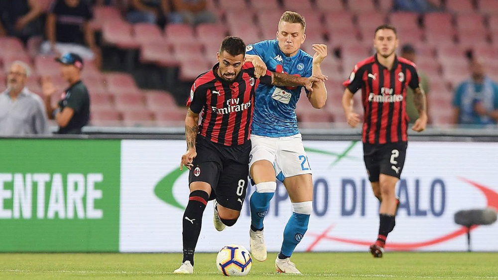

Milan cedió la victoria y perdió contra Napoli por 3-2 por la fecha 2 de la Serie A. Un gol de Mertens y un doblete de Zielinski le dio la victoria por remontada a los 'Azzurri'.
El partido estaba a favor de AC Milan. A los 15 minutos del juego, tras un pase al aire de Fabio Borini, Giacomo Bonaventura dio un salto para pegarle al balón y anotar un increíble gol para los 'rossoneros'. Para el segundo tiempo, a los 49' Suso asistió a Davide Calabria, quien disparó con definición para el 2-0.
Sin embargo, los 'Azzurri' no se rindieron y lograron el empate a través de un doblete del polaco Piotr Zielinski. A los 53', tras recibir el balón de José Callejón, el mediocampista de 24 años le pegó con la zurda para el 2-1. A los 67', logró tener el balón para disparar con fuerza la pelota y meterla en las redes de Gianluigi Donnarumma. 2-2 están en el estadio San Paolo. A los 81', los locales silenciaron a los dirigidos por Gennaro Gattuso cuando Allan le pasó el balón a Dries Mertens para sentenciar el 3-2 a favor de Napoli.